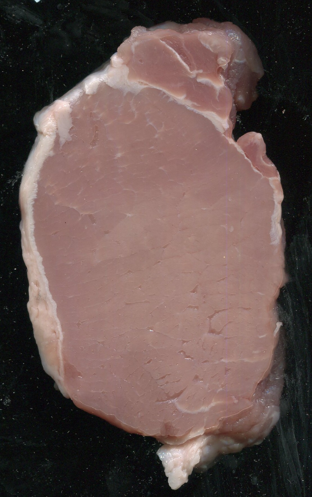
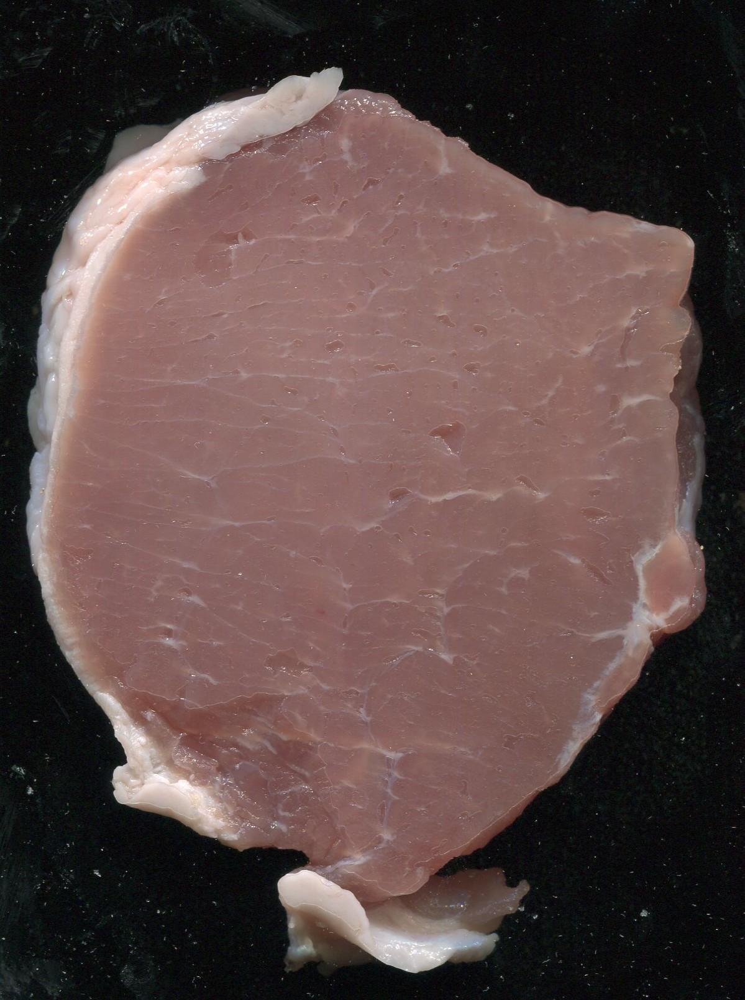
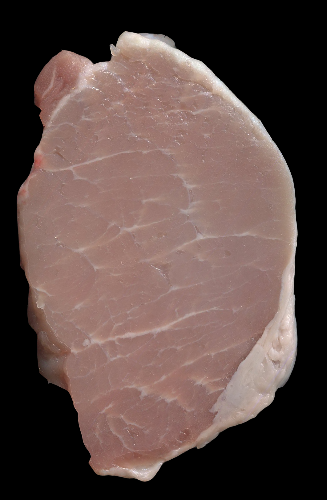
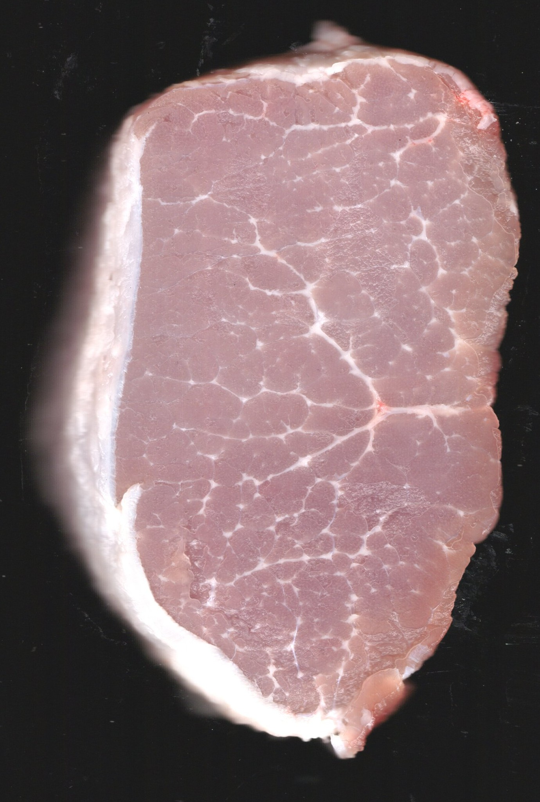
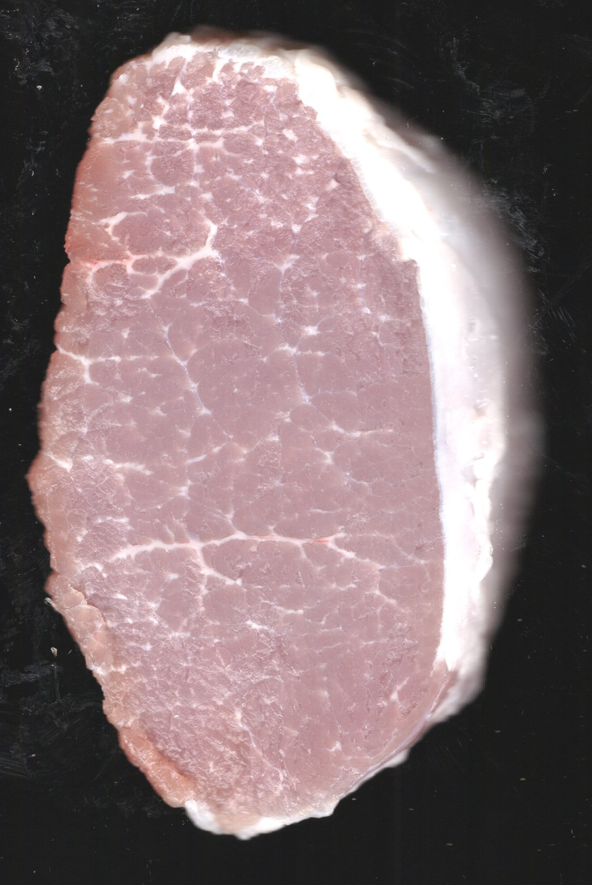
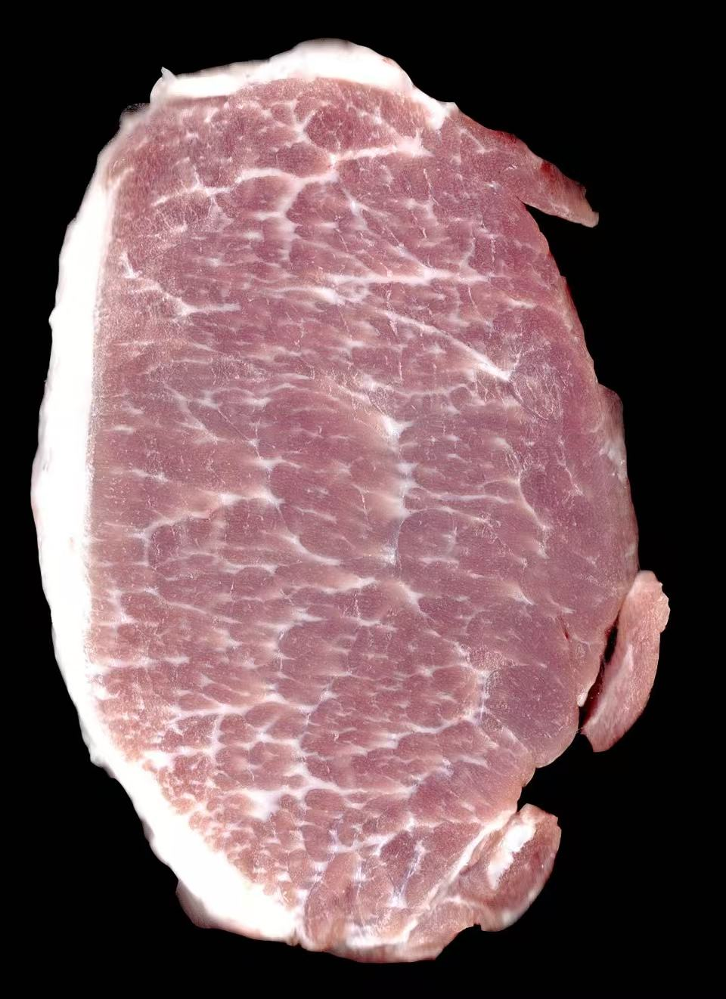

Download
MMQ, Version 1.0.
User manual (PDF)
The PDF file is in Chinese.
Before using the software please read:
Taking images
Help
How to start
Double-click the executable, or right-click it and choose Run as administrator. The log-in window opens. The manual gives the initial username admin and the initial password 1. See Log in.
The printed manual also refers to the program file as the multifunctional meat-quality executable. In this distribution folder the file name is MMQ Determination Software.exe.
Computer
- CPU: Intel Core i5 or higher
- Memory: 8 GB or more
- Discrete graphics memory: 2 GB or more
- A USB port
Operating system
64-bit Windows 10 or Windows 11.
Pork marbling measurement
PorkMS (Pork Marbling Measurement System) estimates the fat area ratio on a pork muscle cross-section and turns that ratio into a marbling grade. This grade is not the NPPC 6-point marbling score used by the MMQ desktop program. Use the tool below for the fat-ratio grade. Use MMQ when you also need L*, a*, b*, an NPPC colour score and intramuscular fat.
Animal measurement info
The form is optional. It does not change the image analysis. Anything you type is included in the exported CSV.
| Location | Operator | ||
|---|---|---|---|
| Breed | Gender | ||
| Date | |||
Standard test images
These six reference pictures cover grades 1 to 6. Analyze under a picture runs that picture and adds a history row.






Measure one image
Click the box or drop a JPG or PNG file into it. A preview appears. × removes the file. Start measurement uses one trial when the analysis succeeds.
Click or drag an image here
JPG or PNG
Measurement history
Each row shows the time, the original image, the marked image, the fat ratio and the marbling grade. Green regions on the marked image are fat found by the page. The rest is the muscle region kept after preprocessing.
Marbling grades
The grade follows the fat area ratio on the muscle cross-section.
| Grade | Fat area ratio | Description |
|---|---|---|
| 1 | ≤ 0.275% | No marbling, extremely low fat |
| 2 | 0.275% – 2.284% | Trace marbling |
| 3 | 2.284% – 5.902% | Slight marbling |
| 4 | 5.902% – 8.703% | Moderate marbling |
| 5 | 8.703% – 12.464% | Medium marbling |
| 6 | 12.464% – 18.045% | Modestly abundant marbling |
| 7 | 18.045% – 23.508% | Abundant marbling |
| 8 | 23.508% – 28.232% | Highly abundant marbling |
| 9 | 28.232% – 33.355% | Extremely abundant marbling |
| 10+ | > 33.355% | Super abundant marbling |
The page separates the sample with Otsu thresholding, filters it in Lab colour space, and uses connected components to keep a valid muscle region. Fat particles are then taken from block-normalised brightness. Desktop colour calibration, folder batching and IMF stay in How to use MMQ.